Eerst rust
Hydar schreeuwt nooit, ook niet als het misgaat. In een kalme auto durf je fouten te maken, en van fouten leer je sturen.
Rijschool Afrin · Tilburg en Waalwijk
★5,0 op Google (78 reviews) 9,5 op Trustoo (74 reviews) 76,9% slagingspercentage 22 jaar ervaring
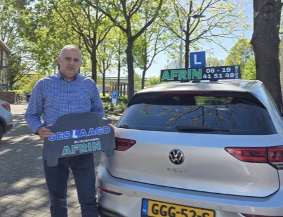
Lente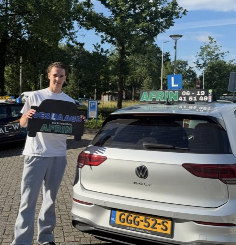
Zomer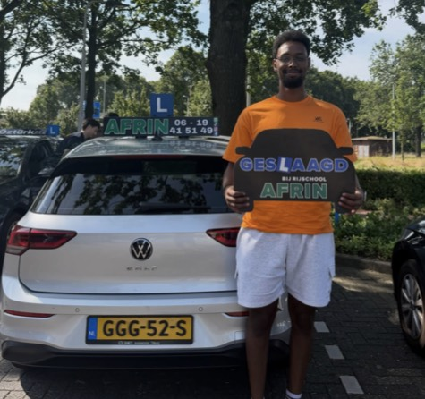
Zomer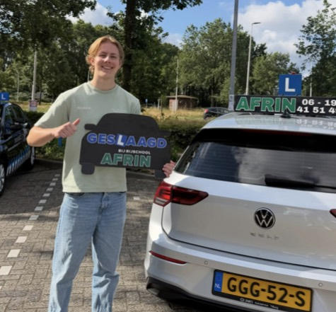
Zomer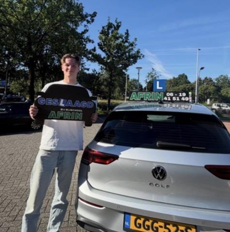
Zomer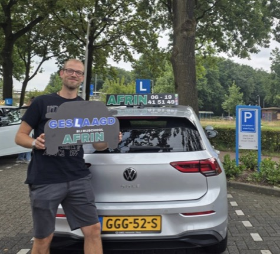
Zomer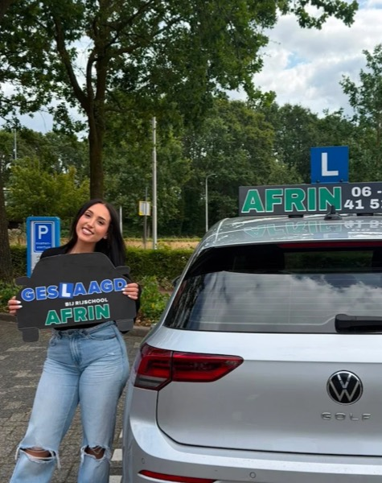
Zomer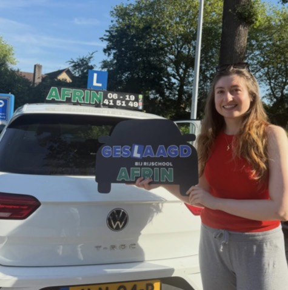
Zomer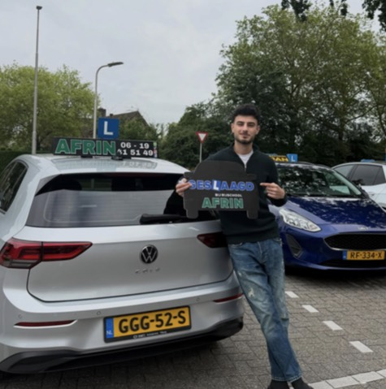
Herfst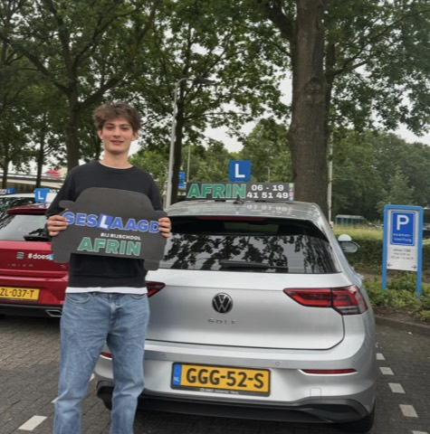
Herfst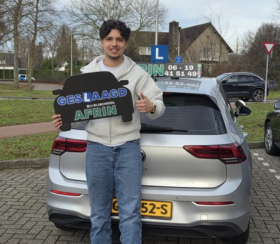
Winter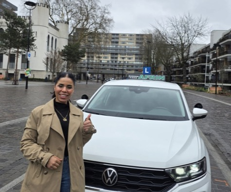
WinterDe methode
In de reviews vallen steeds dezelfde drie woorden: rustig, duidelijk, professioneel.
Hydar schreeuwt nooit, ook niet als het misgaat. In een kalme auto durf je fouten te maken, en van fouten leer je sturen.
Elke handeling gaat stap voor stap, tot jij hem aan een ander zou kunnen uitleggen. Pas dan komt de volgende.
Wie begrijpt wat hij doet, is sneller klaar. Mario haalde zijn rijbewijs in twee maanden, Diyar in drie.
Het aanbod
Autorijlessen, categorie B. In de vorm die bij jouw leven past.
Leren schakelen in de Golf, of automaat als dat beter bij je past.
Kleinere stappen, meer herhaling, nooit een verheven stem.
Meerdere lessen per week, in korte tijd naar je examen.
Ruim van tevoren gepland, om school of werk heen.
Je gaat pas op examen wanneer je er klaar voor bent.
Betaal in één keer of in twee gelijke termijnen.
Vier talen
Je hoeft je hier nooit eerst uit te leggen voordat je kunt beginnen.
Het bewijs
Veertien geslaagden op dezelfde parkeerplaats bij het CBR in Tilburg.
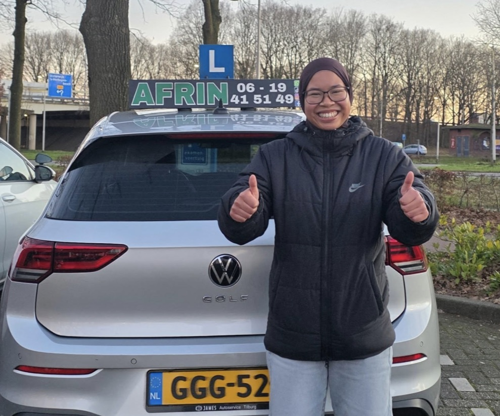
Winter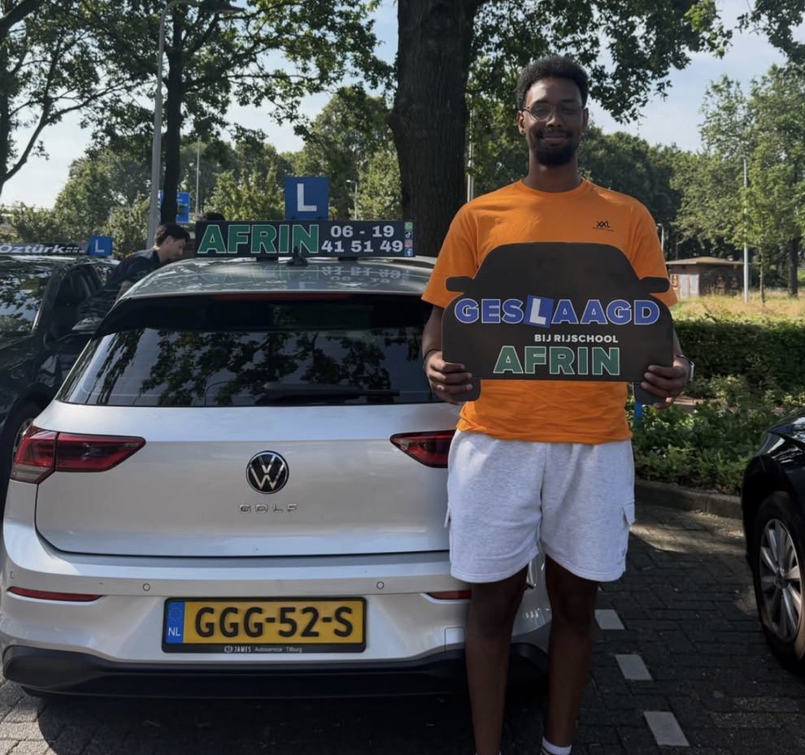
Zomer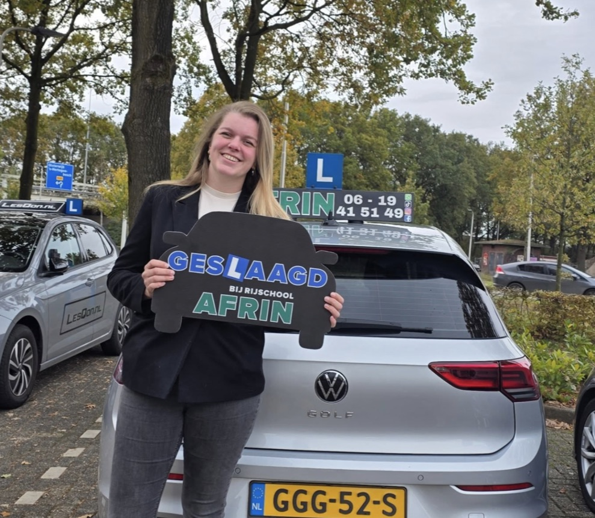
HerfstReviews
Eén rode draad: rustig, duidelijk en vaak in één keer geslaagd.
Nadat ik bij een andere rijschool twee keer was gezakt, ben ik hier in één keer geslaagd. De lessen waren duidelijk, professioneel en precies afgestemd op wat ik nodig had.
AAyuub Yanyuurow
De instructeur is rustig, vriendelijk en schreeuwt nooit, iets wat voor mij erg belangrijk was. Hij is kritisch op de juiste momenten en helpt je stap voor stap om een betere bestuurder te worden.
OOlyar Slo
Binnen twee maanden mijn rijbewijs gehaald én in één keer geslaagd! De lessen waren rustig, duidelijk en ontspannen. De instructeur neemt echt de tijd voor je.
MMario Corcoz
Een goede instructeur die alles duidelijk uitlegt en veel geduld heeft. Daarnaast denkt hij goed mee met je planning en maakt hij altijd ruimte voor werk of school.
DDamien de Weerd
Zojuist in één keer geslaagd dankzij Hydar! Hij straalt veel rust uit, legt alles duidelijk uit en zorgt ervoor dat je goed voorbereid en vol vertrouwen aan je examen begint.
EErik de Vries
De instructeur is professioneel, geduldig en legt alles rustig en duidelijk uit, vooral wanneer iets lastig is. Dankzij zijn goede begeleiding kreeg ik steeds meer vertrouwen achter het stuur.
LLawand Hussain
Hydar legt alles rustig en duidelijk uit en neemt de tijd om ieder onderdeel goed aan te leren. Je merkt dat hij veel aandacht heeft voor zijn leerlingen.
SSenna van der Velden
Bel, app of stuur het formulier. Je hoort snel wanneer je eerste les is, en daarna merk je het vanzelf: rust werkt.